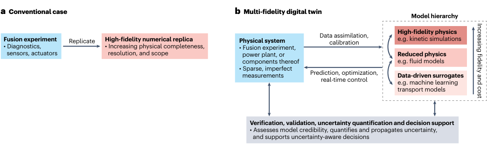

不完美模型如何构成聚变数字孪生
Fusion digital twins from imperfect models
原文与出版信息 ↗ · 据用户提供版本整理；公式离线预渲染；原图为关键图精选，非全文翻译。
1. 先辨文章类型：这是方法论评论，不是性能论文
Farcaș 与 Jenko 的核心观点是：聚变数字孪生不应被定义为一个越来越昂贵的“完美数值复制品”，而应是一套把不完美模型和数据组织起来、在规定时间内支持可靠决策的系统。文章讨论的是建设原则，没有发布新的求解器基准、控制实验或统一误差保证。阅读时应把作者的建议与已被本篇实证证明的结果分开。（第 1–3 页）
2. 数字模型、数字影子和数字孪生的分界
本文采用的数字孪生定义有三个关键条件：对应一个具体的物理系统；随测量动态同步；能预测并支持作用于该系统的决策。泛指“所有托卡马克”的模型库，即使保真度很高，也还不是某台装置的孪生。
信息必须双向流动：实验测量进入状态估计和模型校准，虚拟侧预测再影响物理侧操作、控制或修改。在文中引用的集成分类法中，只有自动物理到虚拟更新、缺少对应自动反向通路的是 digital shadow（数字影子）。数字影子也可以有预测能力、帮助人作决策，差别不在是否能绘制漂亮界面，而在闭环集成程度。（第 1 页）
因此，一套离线数据库、实时看板或高分辨率三维动画不能仅凭名称被认定为数字孪生。离线多保真研究与孪生也有区别：后者持续绑定具体装置，而且其预测要在时间压力下被实际使用。
3. 为什么“不完美”不是失败，而是设计前提
聚变同时要求跨尺度物理可靠性与快速响应。高保真回旋动理学计算可能消耗数百万核时、持续数天乃至数周，无法直接进入要求大量评估的优化，更无法直接进入实时控制。反应堆环境又限制诊断数量和寿命，不能假定传感器会弥补所有模型缺陷。
作者主张的模型层级由高保真动理学、中间层流体或约化物理、低成本解析模型与数据驱动代理组成。重点不是先挑出唯一最好的模型，而是明确每层对当前任务提供什么信息、在哪个参数域可信、何时值得付出高保真成本。（第 1–2 页）
低保真模型不必单独达到最终精度，但必须对任务有信息价值且廉价；最终可信度由经过验证的高保真模型与数据锚定。这个说法不是“错误模型随意平均就能变正确”：若所有层都继承同一遗漏物理或训练偏差，多模型并存也可能一起错。

4. 同一思想在四种任务中的落实
| 任务 | 多保真分工 | 关键检查 |
|---|---|---|
| 数据同化 | 稀疏测量与不同模型共同推断当前状态和参数。 | 测量误差、不可辨识参数和模型偏差是否被区分？ |
| 向前预测 | 快速模型承担多数计算；估计不确定性超过容限时触发昂贵计算。 | 触发阈值是否与任务误差和预算匹配？ |
| 设计优化 | 代理探索大设计空间，高保真模型复核有希望的候选。 | 优化器是否利用了代理最不可靠的区域？ |
| 实时控制 | 快速代理在环内行动，高保真计算或其预计算数据库在环外校准。 | 延迟、分布外输入与安全回退如何处理？ |
表中前两列概括正文，第 3 列是本阅读报告据此提出的实践检查，不是文中已实施的实验方案。作者特别指出昂贵评估可以服务两次：既改进当前预测，也补充训练数据以改善后续低成本模型。（第 2 页）
5. V、V 与 UQ 不能混成一句“已验证”
- Verification，数值核验：给定的方程是否被正确求解，离散和迭代误差多大？
- Validation，物理验证：这些方程是否描述了目标应用所需的物理，实验依据是什么？
- Uncertainty quantification，不确定性量化：输入、模型形式、数据和数值近似的不确定性怎样传播到所关心的预测与决策？
这些工作应该从系统开发之初嵌入，而不是最后加一个误差条。高保真锚点尤其需要严格核验与验证；低保真层仍需按角色和使用参数域评估；不确定性则必须贯穿测量同化、调用高保真模型的判断以及最终行动。（第 3 页）
作者同时承认：上述流程只能发现和减轻部分局限，不能保证发现所有缺陷。数据稀疏、未探索运行区间和共同模型偏差仍会限制可信度。因此“带不确定性”也不自动等于可靠，需要检验区间是否校准、是否覆盖真正影响决策的遗漏因素。
6. 怎样把这篇评论用到自己的研究
对线圈与磁构型研究，一个可落地的启示是把快速几何指标、受约束线圈优化和高保真场误差/轨道计算放在明确分工中：便宜指标用于筛选，不冒充可达到工程性能的上限；昂贵实验用于校准指标失效区间。这个例子是阅读延伸，并非本文讨论或验证过的具体线圈方案。
最重要的转变是：评价体系不再只问“模型像不像真实系统”，还问“在给定时间和数据条件下，是否足以支持这项具体决策”。这既不降低物理要求，也不要求所有问题都使用最高保真计算。
- 如果模型只从装置自动取数据，但所有行动都由人另行决定，按本文分类叫什么？
- 一个代理的全局平均误差很小，为什么仍可能误导最优化？
- 高保真模型自身有未校准偏差时，增加低保真模型数量能否自动恢复可信度？